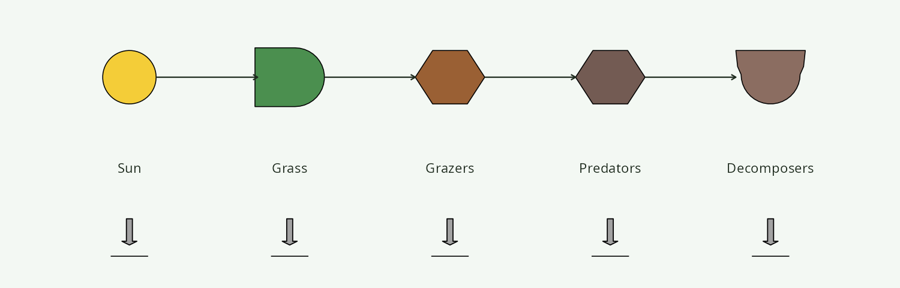
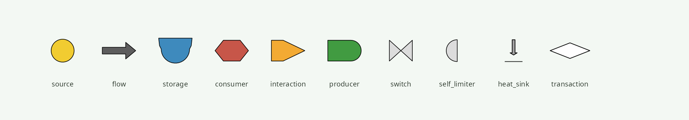
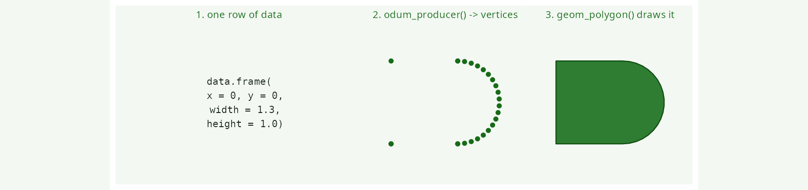

ggplot2 layers for H.T. Odum’s Energy Systems Language
energese provides ggplot2 layers for H.T. Odum’s Energy Systems Language (ESL) — also known as Energese, Energy Circuit Language, or Generic Systems Symbols — a visual vocabulary of ten canonical symbols that Howard T. Odum developed in the 1950s during tropical-forest studies at El Verde, Puerto Rico (Odum & Pigeon 1970, funded by the U.S. Atomic Energy Commission) and formalised in later systems-ecology work. See the Wikipedia article for a general introduction.

Every canonical ESL symbol on Wikipedia’s Energese reference chart is exposed as a proper ggplot2 layer:
{kind=link}
| Symbol | Purpose | Function |
|---|---|---|
| Circle | Source (renewable / external input) | geom_odum_source() |
| Arrow | Generic flow | geom_odum_flow() |
| Bertalanffy module | Storage (flat top, rounded bottom) | geom_odum_storage() |
| Hexagon | Consumer | geom_odum_consumer() |
| Chevron | Interaction (multiplicative junction) | geom_odum_interaction() |
| Bullet | Autocatalytic producer | geom_odum_producer() |
| Bowtie | Switch (on/off logic gate) | geom_odum_switch() |
| Semi-circle | Self-limiter (saturating unit) | geom_odum_self_limiter() |
| Down-arrow + line | Heat sink (dispersed energy) | geom_odum_heat_sink() |
| Elongated diamond | Money transaction | geom_odum_transaction() |
Each takes standard ggplot2 aesthetics (x, y, fill, colour, alpha, linewidth) plus a geometry aesthetic (width + height for polygonal symbols, radius for circular ones), is vectorised over rows of data, and composes naturally with ggplot(), facet_*(), gganimate, patchwork, etc.
Installation
# CRAN (once accepted)
install.packages("energese")
# Development version
# install.packages("remotes")
remotes::install_github("ericscheier/energese")Reproducing the Wikipedia Energese chart
The package ships with plot_energese_reference() — a single function that draws every canonical Odum ESL symbol in the same top-to-bottom layout as Wikipedia’s reference chart. This is the “does the package actually let you produce these diagrams” proof:
Composing a small diagram
library(ggplot2)
library(energese)
d <- data.frame(
x = c(0, 3, 6, 9, 12, 15, 18, 21, 24, 27),
y = 0,
role = c("source", "flow", "storage", "consumer", "interaction",
"producer", "switch", "self_limiter", "heat_sink",
"transaction"))
ggplot(d, aes(x = x, y = y)) +
geom_odum_source (data = d[1, ], radius = 0.6) +
geom_odum_flow (data = d[2, ], width = 1.5, height = 0.8) +
geom_odum_storage (data = d[3, ], width = 1.5, height = 1.2) +
geom_odum_consumer (data = d[4, ], width = 1.5, height = 1.0) +
geom_odum_interaction(data = d[5, ], width = 1.5, height = 1.0) +
geom_odum_producer (data = d[6, ], width = 1.5, height = 1.0) +
geom_odum_switch (data = d[7, ], width = 1.0, height = 1.0) +
geom_odum_self_limiter(data = d[8, ], width = 0.8, height = 1.0) +
geom_odum_heat_sink (data = d[9, ], width = 0.8, height = 1.0) +
geom_odum_transaction(data = d[10, ], width = 1.8, height = 0.7) +
geom_text(aes(y = -1.8, label = role), size = 3) +
coord_fixed() +
theme_void()
Design

Under the hood each geom_odum_* extends ggplot2::GeomPolygon and uses an internal .expand_odum() helper to convert each row of data into a set of polygon vertices, then delegates rendering to GeomPolygon. This means every layer supports the full ggplot2 grammar out of the box — facets, animations, palettes, coordinate systems, statistical transformations.
Symbols with multiple sub-polygons (switch, heat_sink) emit their sub-parts as distinct group values so outlines don’t self-cross.
For users who want direct access to the polygon coordinates (e.g. for gganimate transition_states or non-ggplot renderers), the low-level vertex helpers are also exported: odum_circle(), odum_source(), odum_flow(), odum_storage(), odum_consumer(), odum_interaction(), odum_producer(), odum_switch(), odum_self_limiter(), odum_heat_sink(), odum_transaction(), odum_money().
Prior art
A deep scan of CRAN, GitHub, PyPI, and the biennial Emergy Synthesis proceedings found no other grammar-of-graphics ESL library. The closest peers:
- EmSim (Valyi & Ortega 2004) — Java ODE integrator for ESL diagrams, no rendering API, effectively abandoned.
-
sholtomaud/odum-energy-language — TypeScript GUI drag-and-drop editor, no data binding. Sholto Maud also produced the Visio stencil that Wikipedia’s Energese chart is based on — the same chart this package’s
plot_energese_reference()reproduces programmatically. -
University of Florida CEP
- International Society for the Advancement of Emergy Research — reference SVG images, not programmatic stencils.
energese fills the gap: programmatic, data-bindable Odum ESL layers in R’s grammar of graphics.
Related concepts
Odum’s ESL is the visual notation for emergy accounting — a body of ecological-economics theory built on:
- Transformity (sej/J) — the accumulated solar-emergy embodied in one joule of a product; measures energy quality.
- Empower (sej/time) — the rate of emergy flow through a system.
- Maximum empower principle — Odum’s proposed fourth thermodynamic law: systems that self-organise to maximise their power intake dominate under natural selection.
- Emergy hierarchy — the ordering of processes by transformity, from raw sunlight (1 sej/J) up through fuels, food, and information.
If you need to compute those quantities from real fuel-mix and household data, see the sibling package emburdensynth, which uses energese for diagrams and provides its own emergy pipeline.
Citation
If you use energese in academic work, please cite:
Scheier, E. (2026). energese: ggplot2 Layers for H.T. Odum’s Energy Systems Language. R package version 0.1.0. https://github.com/ericscheier/energese
Please also cite the canonical Odum references shipped in inst/CITATION:
- Odum, H.T. & Pigeon, R.F. (eds.) (1970). A Tropical Rain Forest: A Study of Irradiation and Ecology at El Verde, Puerto Rico.
- Odum, H.T. (1994). Ecological and General Systems: An Introduction to Systems Ecology. Rev. ed. University Press of Colorado.
- Odum, H.T. & Odum, E.C. (2000). Modeling for All Scales. Academic Press.
- Odum, H.T. (2007). Environment, Power, and Society for the Twenty-First Century: The Hierarchy of Energy. Columbia University Press.
- Brown, M.T. (2004). “A picture is worth a thousand words: Energy systems language and simulation.” Ecological Modelling 178: 83–100. https://doi.org/10.1016/j.ecolmodel.2003.12.008
Attribution
Visual geometry validated against Wikipedia’s Energese reference chart, originally produced as a Microsoft Visio stencil by Sholto Maud.